Digital Art · 2023
Digital Art · Video · 2025
Digital Art · Video · 2026
—
CHAPTER I
An image so ingrained in the collective memory that its reproduction has become more immediate than the man it depicts.
Digital Art · Animation · 2026


Digital Art · 2025
—
CHAPTER II
When the world lies, who remains to tell the truth? The bomb was not dropped on one place alone. It was dropped on all of us.
3D animation, Mixed video · 2025
Ai animation · video · 2026
AI animation · 3D animation · Crayon · 2026
—
CHAPTER III
What is to be understood about the personas we create in our lives. Is a revolutionist to bend the society he lives in or bend himself. Do the people need a revolution or does the revolutionary need it?



The Atelier/Propitiation
—
Introduction
The New Era
When I created The Atelier/Propitiation, I wanted to establish a simple idea: digital art is more than art made with computers—it has its own distinct spirit. Through the loss of tactile presence that's of drawing, this physical experience has been altered into a mental experience where thoughts give way to shape.I saw it as a gateway to a new frame of thinking that challenges the status quo.